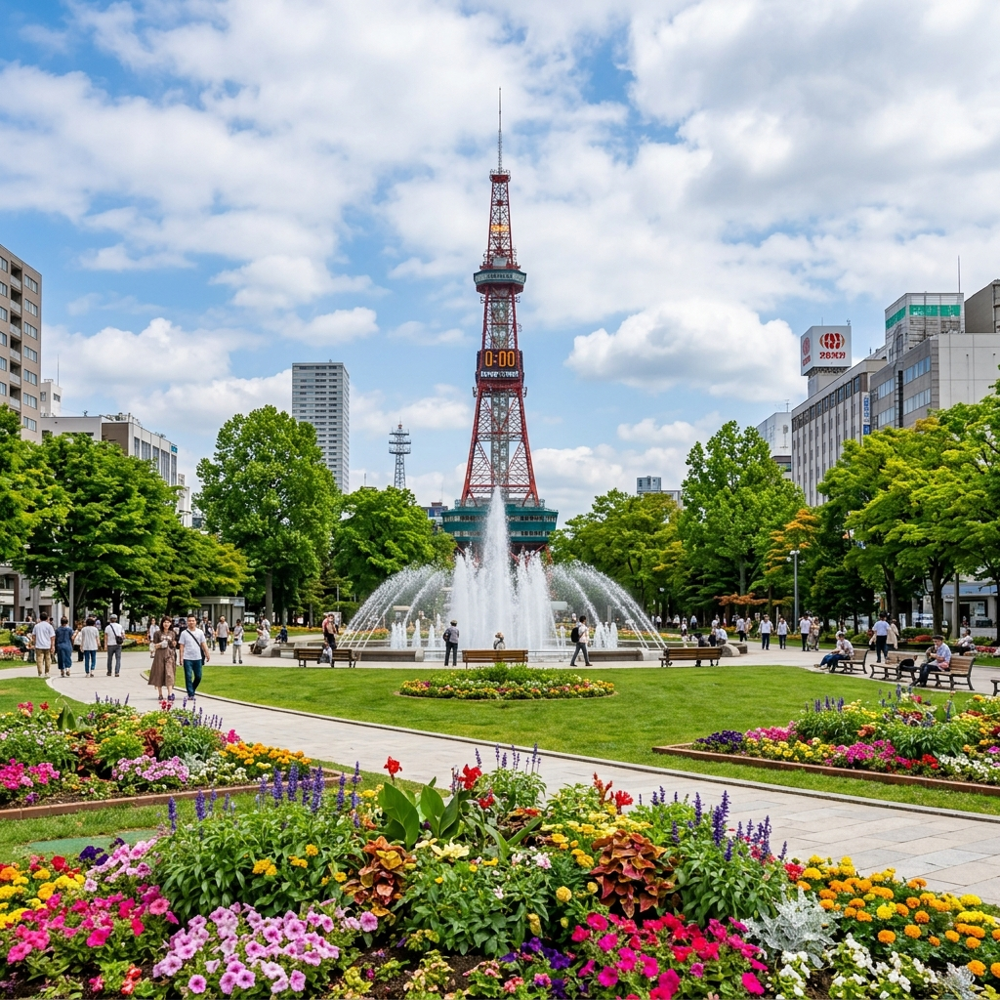
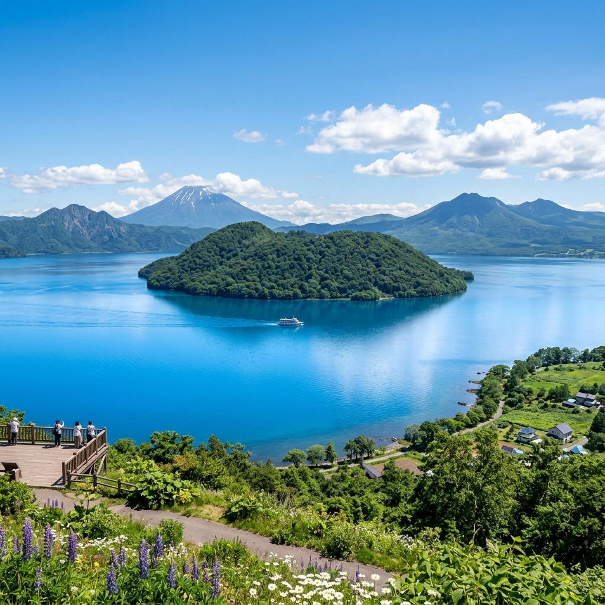
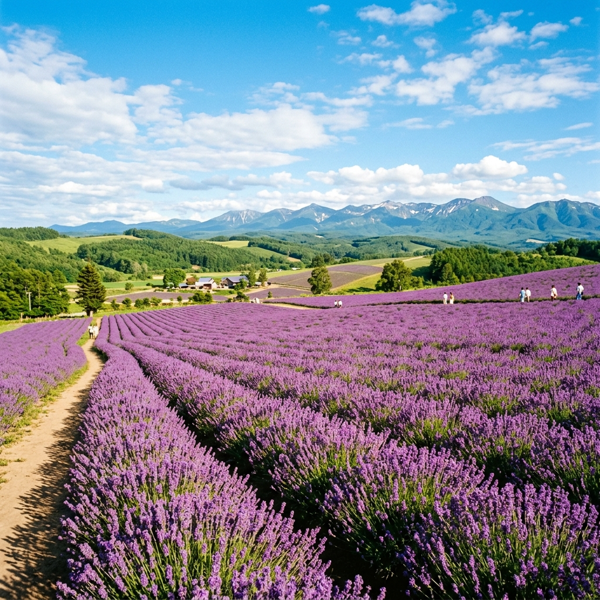
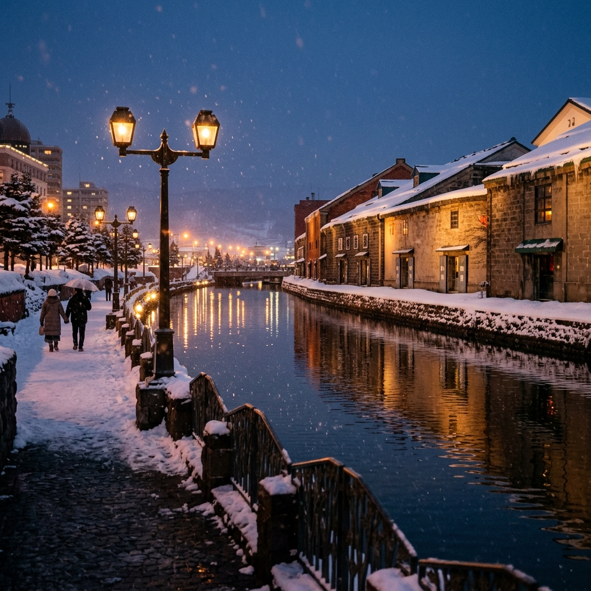

札幌 Sapporo
北海道の政治・経済・文化の中心地。美しい並木や花壇が広がる「大通公園」を中心に、名物テレビ塔や時計台などの歴史的シンボルが点在し、四季折々のイベントと都市の魅力が融合しています。
どこまでも広がる壮大な大自然、歴史あるロマンチックな街並み、そして五感を満たす美しい四季。
北海道ならではの息をのむような美しい絶景と、心がほどける特別な体験をご紹介します。

北海道の政治・経済・文化の中心地。美しい並木や花壇が広がる「大通公園」を中心に、名物テレビ塔や時計台などの歴史的シンボルが点在し、四季折々のイベントと都市の魅力が融合しています。

美しく澄んだ巨大なカルデラ湖。湖畔を彩る四季折々の表情や、夜空を染めるロングラン花火大会、有珠山ロープウェイからの大パノラマなど、大自然と温泉の魅力を一度に堪能できます。
日本最大級の広大な湿原。手つかずの壮大な大自然が広がり、特別天然記念物のタンチョウや希少な野生動植物が生息しています。細岡展望台からの夕日は言葉を失う美しさです。

夏の北海道を象徴する、一面に広がる鮮やかな紫色のラベンダー畑。風にのって漂う優しい香りと、雄大な十勝岳連峰を背景にした色彩豊かなパッチワークの丘は、まるで絵画のような美しさです。

大正ロマンの風情漂う、歴史的な石造り倉庫群とガス灯が連なる美しい運河。夕暮れ時にはガス灯が灯り、水面に揺らめく光がロマンチックでノスタルジックな雰囲気を演出します。
旅の目的や日数に合わせて選べる、快適な北海道ツアーパッケージ
札幌・小樽・洞爺湖
新千歳空港発着で、札幌・小樽・洞爺湖の主要スポットを無駄なくスピーディーに巡るリーズナブルなプラン。移動時間を最小限に抑え、初めての北海道観光や週末旅行に最適です。
釧路湿原・阿寒湖・知床
日本最大の湿原である釧路湿原や、世界自然遺産・知床をめぐる大冒険プラン。圧倒的なスケールの大自然や野生動物の観察、本格的なカヌーツーリングを楽しみたいアクティブ派におすすめです。
ここに紹介文が入ります。